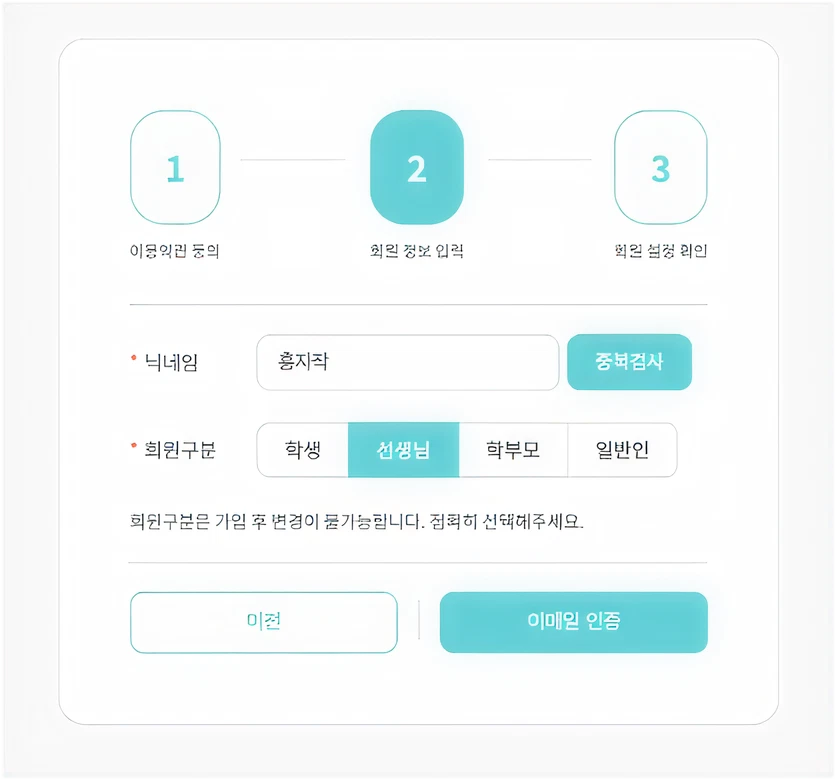
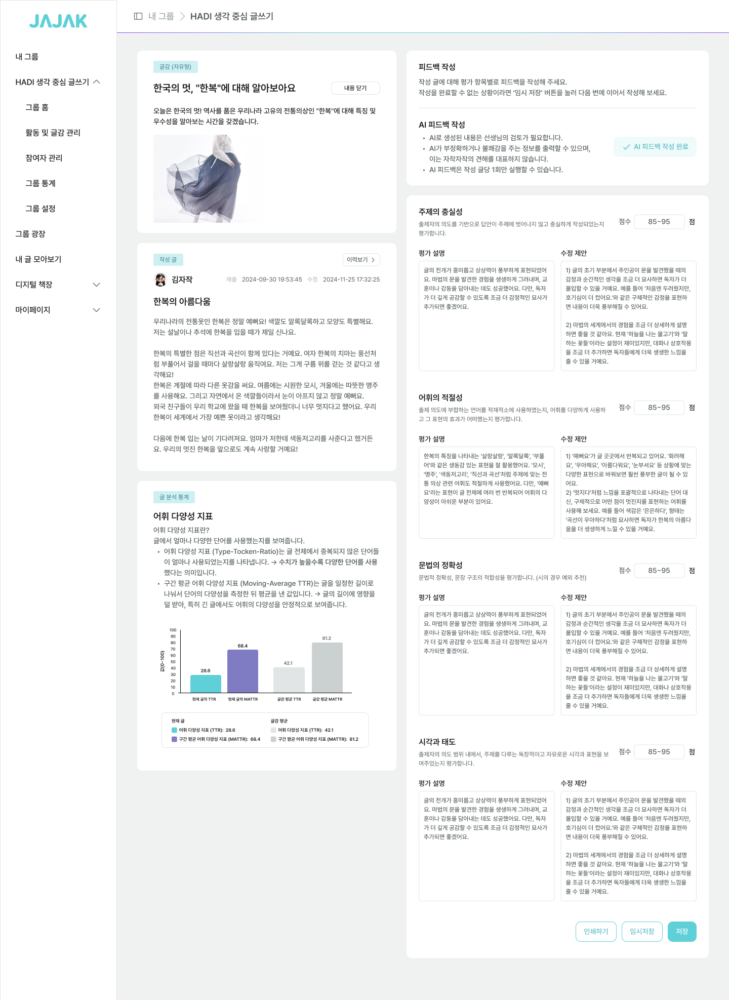
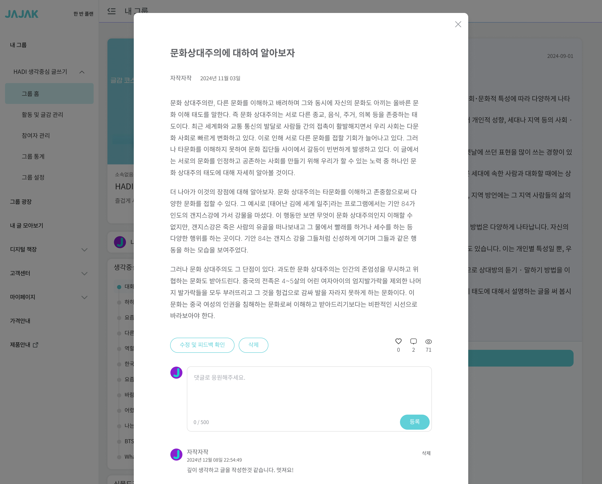
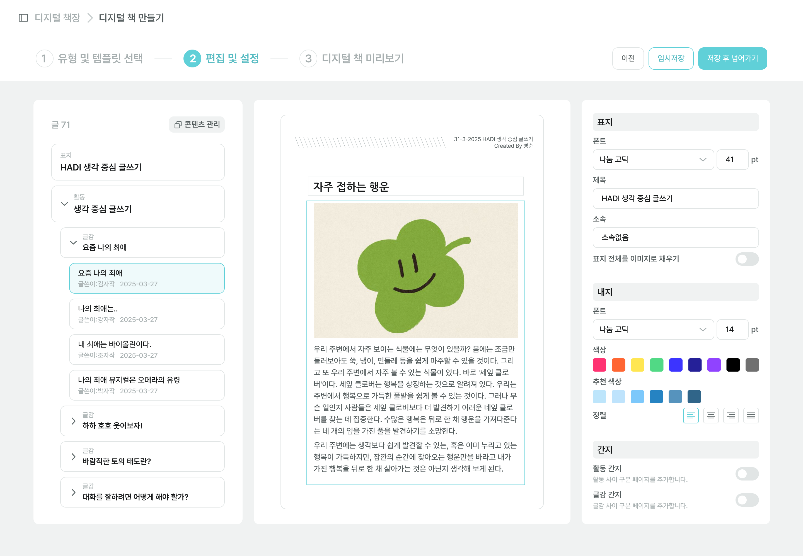
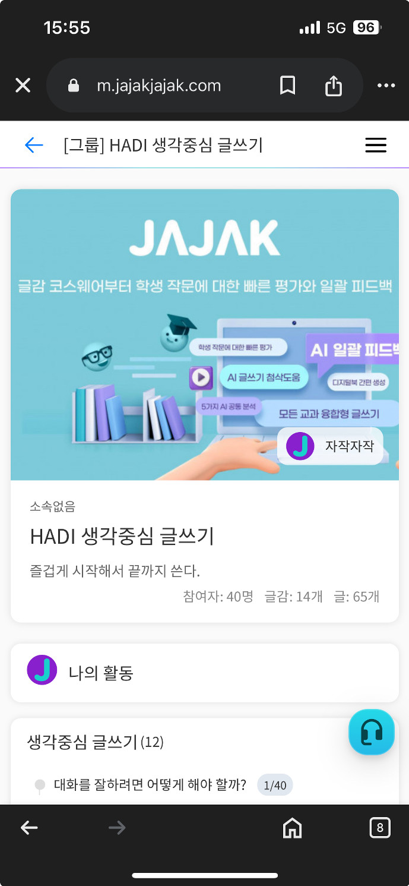
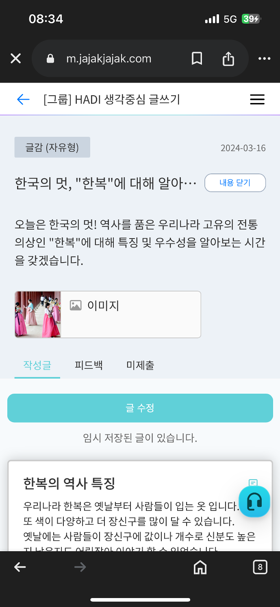
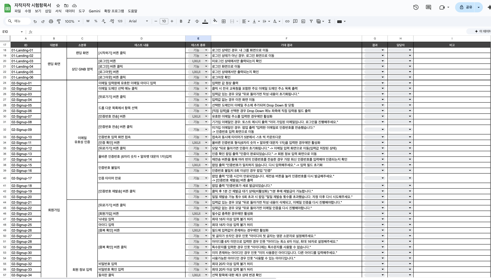

자작자작
UX/UI 개선 프로젝트
Overview
자작자작 : AI 글쓰기 교육 플랫폼
자작자작은 교사의 채점 효율성을 높이고 학생의 사고력과 작문 완성도를 향상시키는 웹 서비스입니다.
(주요 고객: 30–40대 초등 교사)
맞춤법 검사기
디지털 책 발행
학생 주요 기능
- AI 글쓰기 도우미를 통한 시야 확장
- 맞춤법 검사 기능으로 정확하고 완성도 높은 문장 작성 지원
- 한 화면에서 피드백 확인 및 고쳐쓰기 동시 지원
교사 주요 기능
- 글쓰기 과제에 대한 AI 피드백 기능으로 평가 효율 향상
- 갈래별 글감 추천으로 다양한 글쓰기 수업 설계 지원
- 작성한 글을 디지털 책으로 발행하여 수업 아카이빙 지원
Project Goal
개인 사용자의 이탈을 막고, 최초 사용자의 학습 비용을 감소시킵니다.
학생-글쓰기, 교사-피드백 작성 등 핵심 태스크 수행을 방해하는 UX 병목을 제거하고,
최초 경험에서 서비스 가치를 인지하도록 디자인 개선을 진행합니다.
글쓰기 화면 진입, 글 목록 이동, 피드백 확인 등 핵심 태스크마다 불필요한 단계 → 태스크 수행 흐름 단절
반복적 화면 전환 감축 → 하나의 맥락 안에서 태스크를 완료할 수 있는 흐름 구현
피드백 등록 여부 등 핵심 상태 정보가 시각적으로 구분 X → 현황 파악을 위한 추가 탐색 필요
상태 변화를 시각적으로 명확히 구분 → 현황을 빠르게 인지할 수 있는 인터페이스
회원가입, 임시 계정 생성, 디지털 책 편집 등 주요 프로세스에서 용어와 단계가 불명확 → 의사결정 비용 발생
용어 직관화 + 단계 압축 → 최초 사용자도 학습 없이 주요 태스크 목적과 순서를 이해할 수 있도록 구조화
Voice of Customers
사용자의 지속적인 이탈을 막고 리텐션을 높이기 위해, 핵심 사용자인 학생과 교사 두 그룹의 정성적 피드백을 수집했습니다.
그 결과 가독성 저하, 접근성 부족, 복잡한 프로세스 등 서비스 몰입을 방해하는 주요 VOC를 도출했습니다.
글쓰기, 피드백 화면의 낮은 가독성으로 핵심 정보가 잘 전달되지 않아요.
휴대폰으로 접속해서 글을 쓸 때, 글쓰는 화면 찾기가 복잡해요.
제 글에 피드백이 등록되었는지 구분되지 않아요.
회원가입, 로그인하는데 생각할 요소가 많아요.
디지털 책으로 학생들의 글을 취합하는데, 편집 화면이 복잡해요.
피드백 화면 가독성이 떨어져서 읽기 불편해요.
모바일 환경에서 글감 콘텐츠를 찾고, 글을 쓰기 불편해요.
회원가입 프로세스를 체계적으로 구축하여 사용자의 의사결정 시간을 단축했습니다.
“회원가입하는데 절차가 뒤죽박죽이고, 선택할 것이 많아요.”

Step 1 · 회원 유형 선택
이메일 선택 단계만 노출 → 온보딩 과정의 심리적 부담 감축
Step 3 · 회원 정보 입력
각 단계에서 수행해야 할 작업에만 집중할 수 있도록 구성 → 인지 부하 감소, 가입 완료율 향상
복수 컬럼을 사용하여 교사의 평가항목 피드백을 세분화했습니다.
“AI 피드백 기능이 제한적인지 몰랐고, 출력란에 평가 내용이 구분없이 나와서 읽기 힘들어요.”

AI 피드백 사용 상태 추가
피드백 사용 여부를 인지할 수 있도록 상태 추가
피드백 내용 가독성 향상
교사의 피드백 작성 패턴 분석을 통해 평가 내용이 [평가 설명]과 [수정 제안]으로 구성됨을 발견 → Text Area로 그룹핑하여 가독성을 높임
버튼 역할을 명확히하여 불필요한 탐색 없이 피드백 현황을 파악할 수 있도록 개선했습니다.
“하나의 버튼에 두 가지 기능이 혼합되어 있고, 피드백이 작성되었는지 확인이 어려워요.”

버튼 역할 구분 및 상태 추가
[글 수정], [피드백 확인]을 분리 → 피드백 등록 여부에 따라 활성/비활성 상태 구분, 별도 진입 없이 상태를 즉시 인지할 수 있도록 설계
피드백 미리보기 기능 추가
활성화된 피드백 버튼 클릭 시 화면 전환 없이 내용 확인할 수 있도록 설계 → 원하는 정보를 빠르게 확인할 수 있는 흐름 구현
디지털 책의 편집 사용성을 직관적으로 개선했습니다.
“디지털 책 만들기로 학생들의 글을 아카이빙 하는데, 편집 화면이 복잡해요.”

용어 내 인라인 설명 추가
서비스 맥락에서 생소할 수 있는 기능 용어에 인라인 설명을 추가 → 사용자의 학습 비용 절감 및 오류 방지
스텝 인디케이터 위치 조정
화면 하단의 스텝 인디케이터를 상단으로 이동 → 진행 단계의 시인성 및 현재 위치 파악 용이성 확보
플랫폼 간 내비게이션 일관성과 콘텐츠 접근성을 높였습니다.
“모바일로 자주 숙제를 하는데, 글감 콘텐츠를 찾을 때 효율성이 떨어져요.”


네비게이션 일관성 통일
데스크탑과 동일한 브레드크럼 패턴을 모바일에도 적용. 우측에 배치되었던 햄버거 메뉴를 좌측으로 이동 → 플랫폼 간 메뉴 위치의 일관성 확보 + 사용자 혼란 감소
광고같은 그룹 프로필 영역 개선
화면의 2/3 이상을 차지하던 그룹 프로필 영역을 축소, 핵심 목적인 ‘활동 목록’을 상단에 노출 → 스크롤 없이 주요 콘텐츠에 즉시 접근 가능하도록 정보 구조 재편
컴포넌트 체계화로 디자인-개발 일관성 확보
서비스 전반에 사용되는 Button · TextField · Chip · Radio · Modal · Popup 등 주요 UI 요소를 컴포넌트 라이브러리로 구축하여, 디자이너·개발자 간 커뮤니케이션 비용을 줄이고 재사용성을 확보했습니다.
개발 검증을 위한 테스트 케이스 작성
교육 산출물이 기획 의도대로 구현되었는지 검증하기 위해 총 549개의 테스트 케이스를 작성했습니다. 단순 기능 구현 여부뿐 아니라 인터랙션, 피드백 메시지, 레이아웃 등 UX/UI 관점의 항목을 별도로 분리하여 검수했습니다.

딜테일 익수성이 필요한 핵심 태스크의 학습 비용이 감소했습니다.
교사·학생 그룹을 대상으로 대표 태스크를 수행하며 태스크 완료 시간, 오류률, 주관적 난이도를 측정했습니다. 개선 이전과 이후 수치를 비교하여 디자인 개선의 실제 임팩트를 검증했습니다.
학습 비용 감소 확인 · 교사
학습 비용 감소 확인 · 학생
기존 유저의 사용성을 해치지 않으면서 신규 사용자의 학습 비용을 줄이는 서비스 개선 경험을 했습니다.
기존 유저의 익숙함을 고려한 점진적 UX 개선
기존 IA의 복잡함을 해결하면서도, 장기 사용자의 학습된 경험을 존중하여 핵심 병목 지점을 선별적으로 개선하는 균형 감각을 익혔습니다.
유저의 의견을 직접 수집하는 경험
교육박람회 현장에서 수집한 실제 유저의 의견과 VOC 데이터를 결합하여 서비스의 개선 방향성을 수립했습니다. 업데이트 배포 후 다시 현장 피드백을 확인하며 설계한 가설을 직접 검증하였고, 이 과정을 통해 유저의 입장을 깊이 고려하여 작업하는 유저 중심의 업무 방식을 체득할 수 있었습니다.